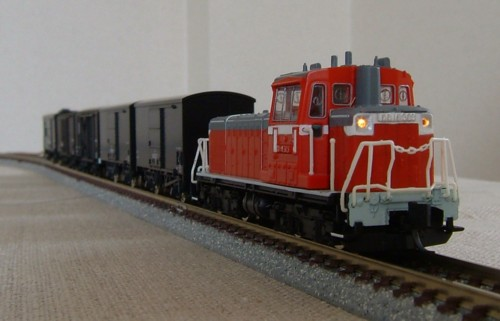

DD16
長らくマイクロエースで我慢(?)してましたが、KATOから0番台と300番台が入線。
テーブルの上で短い貨物列車を牽引しています。
テーブルの上で短い貨物列車を牽引しています。
まずは300番台。
製品は黒ゴム・列車無線アンテナ装備の現在の姿ですが、灰色ゴム・列車無線アンテナなしの国鉄時代に戻しました。
機関車はASSYの車体に、これまたASSYのつらら切りを加工して取り付けました。
ラッセルヘッドの無線アンテナの取り付け穴はそのままですが…
当初は屋根を灰色に塗って303番にしようかとも思っていたのですが、304も意外とかっこいいのでそのままになってます。
製品は黒ゴム・列車無線アンテナ装備の現在の姿ですが、灰色ゴム・列車無線アンテナなしの国鉄時代に戻しました。
機関車はASSYの車体に、これまたASSYのつらら切りを加工して取り付けました。
ラッセルヘッドの無線アンテナの取り付け穴はそのままですが…
当初は屋根を灰色に塗って303番にしようかとも思っていたのですが、304も意外とかっこいいのでそのままになってます。

こちらは0番台。製品のままです。とにかく小さい!
0番台のうち一両にも、ASSYのつらら切りを取り付けました。
七尾線など松任工場持ちの車両はつらら切りがついていたそうです。初期型は結構多いようですね。
七尾線など松任工場持ちの車両はつらら切りがついていたそうです。初期型は結構多いようですね。
貨物列車を牽いているところです。

そんでこちらの「DD16みたいなもの」(笑)。もはや出番はなさそうです…